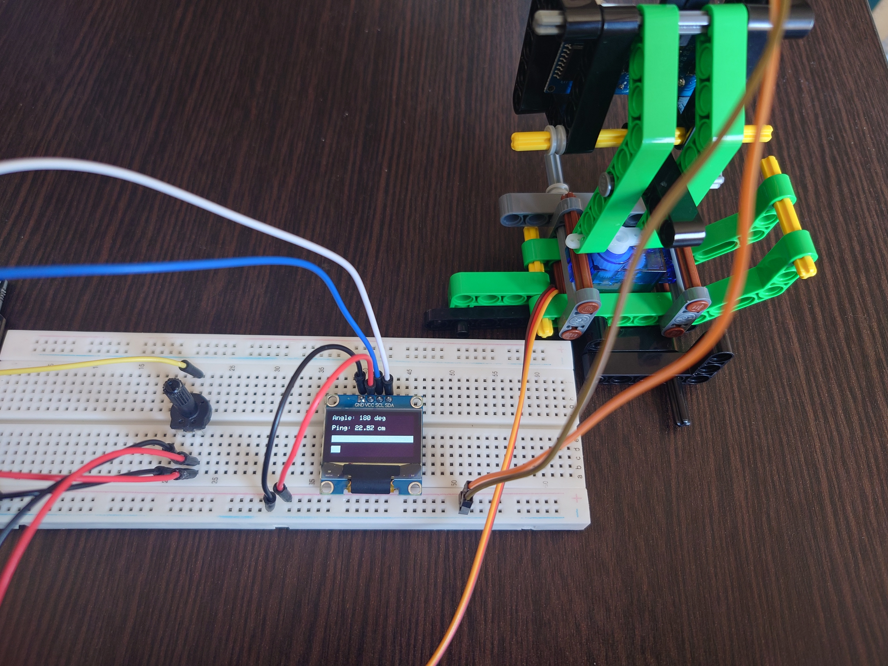

このサイトはRabyの作った自己満サイトです
このサイトから学べることは少ないと思います。しかし、新しい発見の手助けと なればと思います。新しい視点を得たり、興味を持つテーマを見つけたりするこ とができるでしょう。是非、お楽しみいただければ幸いです。
また、このようなことをやってほしいという要望があれば、ぜひお知らせくださ い。私たちは皆さまのご意見を大切にし、より良いサービスを提供できるよう努 めております。どんな小さなことでも構いませんので、皆さまのアイデアをお待 ちしております。


皆さんはレーダーをご存じでしょうか。遠くの船や魚群などの人の目では検知することができないものを 検知見ることができるものです。今回はそれを疑似的に体験できるような作品を作成します。
今回は私はArduino Unoボードを使用します。ボードをUSBケーブルでパソコンに接続し、電源を供給します。

ArduinoのGNDピンをブレッドボードのグランドレール(青色)に接続します
Arduinoの5Vピンをブレッドボードの電源レール(赤色)に接続します
サーボモーターには3本のワイヤーがついています。ブラウン、レッド、オレンジ
ブラウンのワイヤーをグラウンドレールに接続します
レッドのワイヤーを電源レールに接続します
オレンジのワイヤーをArduinoのデジタルピン9に接続します(ジャンパーワイヤーを使って、ブレッドボード軽油で接続)
ポテンショメータをブレッドボーに配置する
ポテンショメータの中央のピンをジャンパーワイヤーでArduinoのアナログ入力ピンA0に接続します
ポテンショメータの左側のピンをジャンパーワイヤーでブレッドボードのグラウンドレール(青色)に接続します
ポテンショメータの右側のピンをジャンパーワイヤーでブレッドボードの電源レール(赤色)に接続します
OLEDディスプレイをブレッドボードに配置します
OLEDディスプレイのGNDピンをブレッドボードのグランドレール(青色)に接続します
OLEDディスプレイのVCCピンをブレッドボードの電源レール(赤色)に接続します
OLEDディスプレイのSCLピンをArduinoのA5ピンに接続します
OLEDディスプレイのSDAピンをArduinoのA4ピンに接続します
超音波センサーのGNDピンをブレッドボードのグランドレール(青色)に接続します
超音波センサーのVCCピンをブレッドボードの電源レール(赤色)に接続します
超音波センサーのTRIGピンをArduinoのデジタルピン7に接続します。
超音波センサーのECHOピンをArduinoのデジタルピン6に接続します

Servo.h：サーボモーターを制御するためのライブラリ
Wire.h：I2C通信をサポートするライブラリ
SPI.h：SPI通信をサポートするライブラリ
Adafruit_GFX.hとAdafruit_SSD1306.h：OLEDディスプレイを制御するためのAdafruitライブラリ
#include <Servo.h>
#include <Wire.h>
#include <SPI.h>
#include <Adafruit_GFX.h>
#include <Adafruit_SSD1306.h>
OLEDディスプレイの設定(SCREEN_WIDTH, SCREEN_HEIGHT, OLED_RESET, SCREEN_ADDRESS)
サーボモーターとポテンショメーターのピン番号と変数の設定(servoPin, potPin, potVal)
超音波センサーのピン番号と設定(trigPin, echoPin, MAX_DISTANCE, timeOut, soundVelocity)
#define SCREEN_WIDTH 128
#define SCREEN_HEIGHT 64
#define OLED_RESET -1
#define SCREEN_ADDRESS 0x3C
Adafruit_SSD1306 display(SCREEN_WIDTH, SCREEN_HEIGHT, &Wire, OLED_RESET);
Servo myservo;
int servoPin = 3;
int potPin = 0;
int potVal;
#define trigPin 12
#define echoPin 11
#define MAX_DISTANCE 200
float timeOut = MAX_DISTANCE * 60;
int soundVelocity = 340;
myservo.attach(servoPin)：サーボモーターをピンに接続
OLEDディスプレイの初期化(display.begin, display.display, display.clearDisplay)
超音波センサーのピン設定(pinMode(trigPin, OUTPUT), pinMode(echoPin, INPUT))
void setup() {
myservo.attach(servoPin);
if (!display.begin(SSD1306_SWITCHCAPVCC, SCREEN_ADDRESS)) {
Serial.println(F("SSD1306 allocation failed"));
for (;;);
}
display.display();
delay(2000);
display.clearDisplay();
// Initialize sonar pins
pinMode(trigPin, OUTPUT);
pinMode(echoPin, INPUT);
Serial.begin(115200);
Serial.println("--- Started ---");
}
ポテンショメーターの値を読み取り (analogRead)、サーボの角度にマッピング (map)
サーボモーターを設定した角度に回転させる(myservo.write)
getSonar()メソッドを呼び出して距離を取得
OLEDディスプレイに角度と距離を表示する(display.clearDisplay, display.setCursor, display.print)
スペクトラムバーを描画する(drawSpectrumBars)
更新されたディスプレイを表示(display.display)
void loop() {
potVal = analogRead(potPin);
potVal = map(potVal, 0, 1023, 0, 180);
myservo.write(potVal);
float distance = getSonar();
display.clearDisplay();
display.setCursor(0, 0);
display.setTextSize(1);
display.setTextColor(WHITE);
display.print("Angle: ");
display.print(potVal);
display.print(" deg");
display.setCursor(0, 16);
display.print("Ping: ");
display.print(distance);
display.print(" cm");
drawSpectrumBars(potVal, distance);
display.display();
delay(100);
}
超音波パルスを送信(digitalWrite(trigPin, HIGH)とdigitalWrite(trigPin, LOW))
エコー時間を測定(pulseIn)
距離を生産(distance = (float)pingTime * soundVelocity / 2 / 10000)
float getSonar() {
unsigned long pingTime;
float distance;
digitalWrite(trigPin, HIGH);
delayMicroseconds(10);
digitalWrite(trigPin, LOW);
pingTime = pulseIn(echoPin, HIGH, timeOut);
distance = (float)pingTime * soundVelocity / 2 / 10000;
return distance;
}
角度と距離をバーの長さにマッピング(map)
角度バーを描画(display.fillRect)
距離バーを描画(display.fillRect)
void drawSpectrumBars(int angle, float distance) {
int angleBarLength = map(angle, 0, 180, 0, SCREEN_WIDTH);
int distanceBarLength = map(distance, 0, MAX_DISTANCE, 0, SCREEN_WIDTH);
display.fillRect(0, 32, angleBarLength, 10, SSD1306_WHITE);
display.fillRect(0, 48, distanceBarLength, 10, SSD1306_WHITE);
}
#include <Servo.h>
#include <Wire.h>
#include <SPI.h>
#include <Adafruit_GFX.h>
#include <Adafruit_SSD1306.h>
#define SCREEN_WIDTH 128
#define SCREEN_HEIGHT 64
#define OLED_RESET -1
#define SCREEN_ADDRESS 0x3C
Adafruit_SSD1306 display(SCREEN_WIDTH, SCREEN_HEIGHT, &Wire, OLED_RESET);
Servo myservo;
int servoPin = 3;
int potPin = 0;
int potVal;
#define trigPin 12
#define echoPin 11
#define MAX_DISTANCE 200
float timeOut = MAX_DISTANCE * 60;
int soundVelocity = 340;
void setup() {
myservo.attach(servoPin); // attaches the servo on servoPin to the servo object
// Initialize OLED display
if (!display.begin(SSD1306_SWITCHCAPVCC, SCREEN_ADDRESS)) {
Serial.println(F("SSD1306 allocation failed"));
for (;;);
}
display.display();
delay(2000);
display.clearDisplay();
// Initialize sonar pins
pinMode(trigPin, OUTPUT);
pinMode(echoPin, INPUT);
Serial.begin(115200);
Serial.println("--- Started ---");
}
void loop() {
potVal = analogRead(potPin);
potVal = map(potVal, 0, 1023, 0, 180); // scale it to use it with the servo
myservo.write(potVal);
float distance = getSonar();
// Display servo angle and sonar distance on OLED
display.clearDisplay();
display.setCursor(0, 0);
display.setTextSize(1);
display.setTextColor(WHITE);
display.print("Angle: ");
display.print(potVal);
display.print(" deg");
display.setCursor(0, 16);
display.print("Ping: ");
display.print(distance);
display.print(" cm");
// Draw spectrum bars
drawSpectrumBars(potVal, distance);
display.display();
delay(100);
}
float getSonar() {
unsigned long pingTime;
float distance;
digitalWrite(trigPin, HIGH);
delayMicroseconds(10);
digitalWrite(trigPin, LOW);
pingTime = pulseIn(echoPin, HIGH, timeOut);
distance = (float)pingTime * soundVelocity / 2 / 10000;
return distance;
}
void drawSpectrumBars(int angle, float distance) {
// Map the angle and distance to bar lengths
int angleBarLength = map(angle, 0, 180, 0, SCREEN_WIDTH);
int distanceBarLength = map(distance, 0, MAX_DISTANCE, 0, SCREEN_WIDTH);
// Draw the angle bar
display.fillRect(0, 32, angleBarLength, 10, SSD1306_WHITE);
// Draw the distance bar
display.fillRect(0, 48, distanceBarLength, 10, SSD1306_WHITE);
}
Arduino IDEに書いたプログラムをArduinoにコンパイルしましょう。
左に動かすとサーボが右に向きます
反対に右に動かすとサーボが左に向きます
あとは三角関数を使って半円状に描画す方法もあるのでプログラムを改造して見るのもいいかもしれません
このサイトはRabyの作った自己満サイトです
このサイトから学べることは少ないと思います。しかし、新しい発見の手助けと なればと思います。新しい視点を得たり、興味を持つテーマを見つけたりするこ とができるでしょう。是非、お楽しみいただければ幸いです。
また、このようなことをやってほしいという要望があれば、ぜひお知らせくださ い。私たちは皆さまのご意見を大切にし、より良いサービスを提供できるよう努 めております。どんな小さなことでも構いませんので、皆さまのアイデアをお待 ちしております。